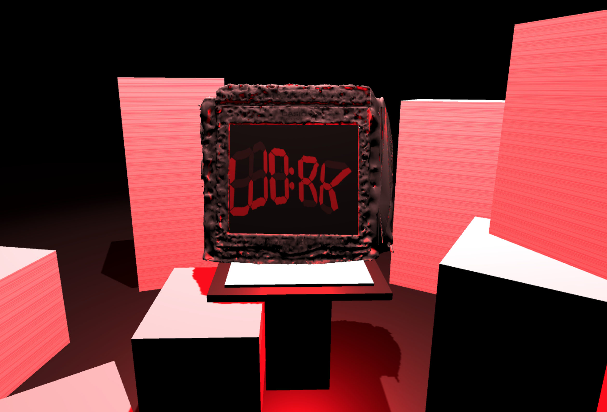
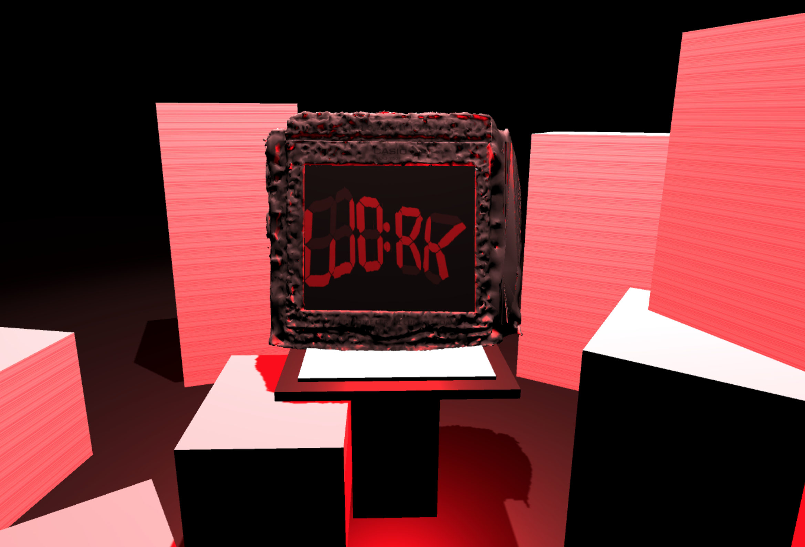

Procrastination
A virtual reality project that was based around the concept of procrastination. The player was placed in a dark room lit by a spotlight and a red flashing light that came from an alarm clock that sat next to a stack of papers on a table. When the player turned the alarm off, it would come back brighter, louder, larger, and with more paper. After a few more presses, the paper would have completely surrounded the player and starts to move towards them, the work literally consuming them, to symbolize procrastinating to the point of no return.
 
